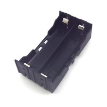

Бокс для 2 аккумуляторов 18650
ПитаниеБокс для 2 аккумуляторов формата 18650 — это держатель/корпус для двух цилиндрических Li‑ion элементов 18650, используемый как удобный источник питания в DIY-устройствах и портативной электронике.
Такие боксы позволяют механически зафиксировать два аккумулятора 18650 и вывести их питание на провода или контакты модуля. По найденным источникам, это именно 2-way 18650 battery holder / box для двух элементов, а не готовый powerbank-модуль с электроникой зарядки и преобразования. Варианты подобных держателей бывают с разной механикой и распайкой контактов; для этого позиции на Амперкот достаточно только общего описания без привязки к конкретной схеме. Обычно их используют в самодельных фонарях, переносных блоках питания, робототехнике и других компактных устройствах. При выборе важно учитывать полярность, способ соединения элементов и совместимость по габаритам с конкретными 18650.